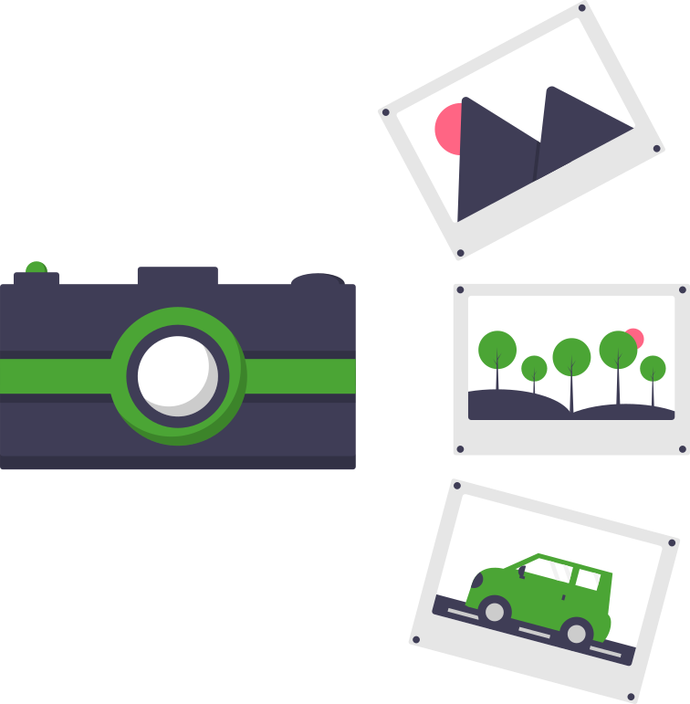

Istituto Comprensivo Acquedolci
Memorie del Territorio
Immagini dal campo
Siti, reperti e uscite — raccolti dagli studenti
Archivio fotografico
Fotografie scattate dai ragazzi durante le uscite sul campo, dai luoghi del territorio ai laboratori didattici. La galleria si arricchirà durante l'anno.

Le fotografie saranno caricate durante il corso dell'anno